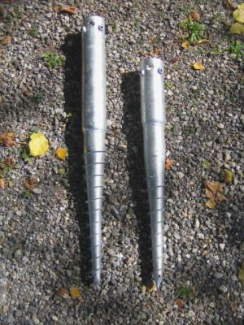

Contents | About | Contact
article 18, issue 06
Theo Schmidt
December 21, 2009
Foundation laying usually means much back-breaking digging even for small buildings. Ground screws are a much easier method for supporting lightweight buildings and are very suitable for installation with human power. They are also easily removed and reused without using machinery.
[Editors' note: While we do cover stationary human power uses in HPeJ, this rather static application may seem "off-topic". It is however a good method for securing bicycle sheds and the like.]
Foundations
for buildings or utilities are often made of poured concrete, sometimes reinforced with steel.
While these can be readily built using human power, there are
disadvantages:
Figure 1: Archimedes: "Give me a place to stand on and I will move the Earth."
Ground screws
may be loaded in compression, tension, and sheer. While they may be
installed using machinery, even large sizes can be screwed in with
human power. As already recognized by Archimedes: "Give me a place to
stand on and I will move the Earth." A great advantage is that they can
also normally be screwed out again by human power - and reused
elsewhere: a semi-mobile foundation. The screwing action also allows
adjusting the vertical depth to millimeter-precision.
|  | |
Figure 2: Earthscrews with flange (length of thread 0.5 m, total lengths 0.8, 1.0 and 1.2 m, diameter of tube 75 mm) | Figure 3: Earthscrews (length of thread 0.4 and 0.5 m, total lengths 0.8 and 1.0 m) |
Several types and many sizes exist. I used three each for
supporting a garden house, the flanged ones at the rear and the tubular
ones at the front. I bought various sizes, unsure whether I might hit
large rocks, but in the end was able to use the long ones everywhere.
All six were screwed right in. The front three received extentions in
the form of further steel tubes.
Figure 4: Garden house with 2.2 kW photovoltaic roof, total weight about one tonne
Inserting the earth screws is very easy. They screw with little effort into the top soil. A spirit level is used to keep the angle vertical. A short lever is sufficient intially.
Figure 5: Earthscrew being inserted. Note magnetic spirit level. | Figure 6: Earthscrew nearly in. Note spring scale and water level (plastic tube). |
Figure 7: Torque versus depth. The last peak could be a rock,
some of the screws didn't go over 300 Nm.
Table 3: Vertical loads at 5 and 10 mm settlement, several soil types and several screw lengths, from (Schulz 2004), Table A8-4
| Ground | Clay | Clay | Clay | Sand, loose | Sand, dense | Gravel, loose | Gravel, loose | Gravel, loose | Gravel, dense |
| Length | 75 mm | 100 mm | 150 mm | 100 mm | 100 mm | 80 mm | 100 mm | 150 mm | 100 mm |
| Settlement | Load | Load | Load | Load | Load | Load | Load | Load | Load |
| [mm] | [kN] | [kN] | [kN] | [kN] | [kN] | [kN] | [kN] | [kN] | [kN] |
| 5,0 | 6.1 | 34.0 | 84.0 | 15.0 | 19.5 | 3.3 | 6.2 | 9.6 | 51.0 |
| 10,0 | 8.1 | 42.0 | 100.0 | 18.8 | 28.0 | 4.1 | 7.9 | 11.6 | 87.0 |
Schulz, H.; Schick, Peter; Schmid, Jürgen.
"Tragfähigkeit und Verschiebungen von Schraubfundamenten der Firma
Krinner" Institut für Bodenmechanik und Grundbau, Universität der
Bundeswehr München, Neubiberg, 05.03.2004;
http://www.steurer.info/fileadmin/pdf/2004-03-05 Gutachten SF Krinner_oPW.pdf
Human Power eJournal